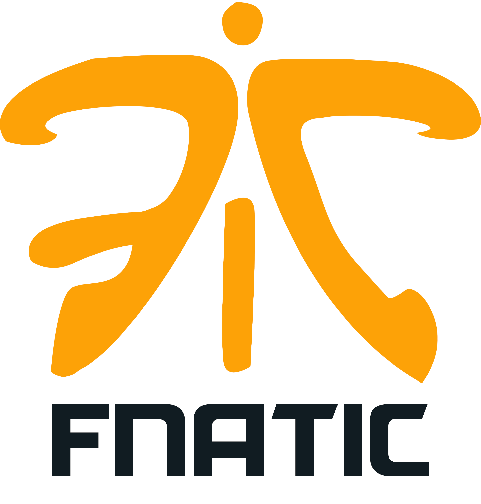
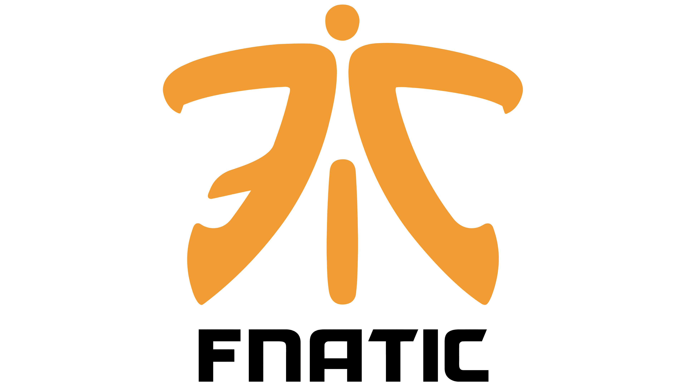

Fnatic
Histórico do time
Fundada em 2004 por Sam e Anne Mathews, a Fnatic é uma das organizações globais mais influentes nos eSports. No Counter-Strike, foi a primeira equipe a se tornar tricampeã de torneios Major na era CS:GO, estabelecendo uma das eras mais dominantes do jogo com lendários elencos suecos repletos de astros como olofmeister e flusha.
Design da logo
O logotipo em formato de monograma moderno une as letras "F", "N" e "C" em uma síntese gráfica arrojada e em cor laranja vibrante. Ele simboliza jogadas rápidas, dinamismo e estilo, destacando-se fortemente nos cosméticos do jogo.
Linha do tempo das logos
-
2004

A primeira logo da Fnatic, a minha preferida.
-
2011

Uma pequena simplificação
-
2020

A logo atual da Fnatic. Uma bosta.